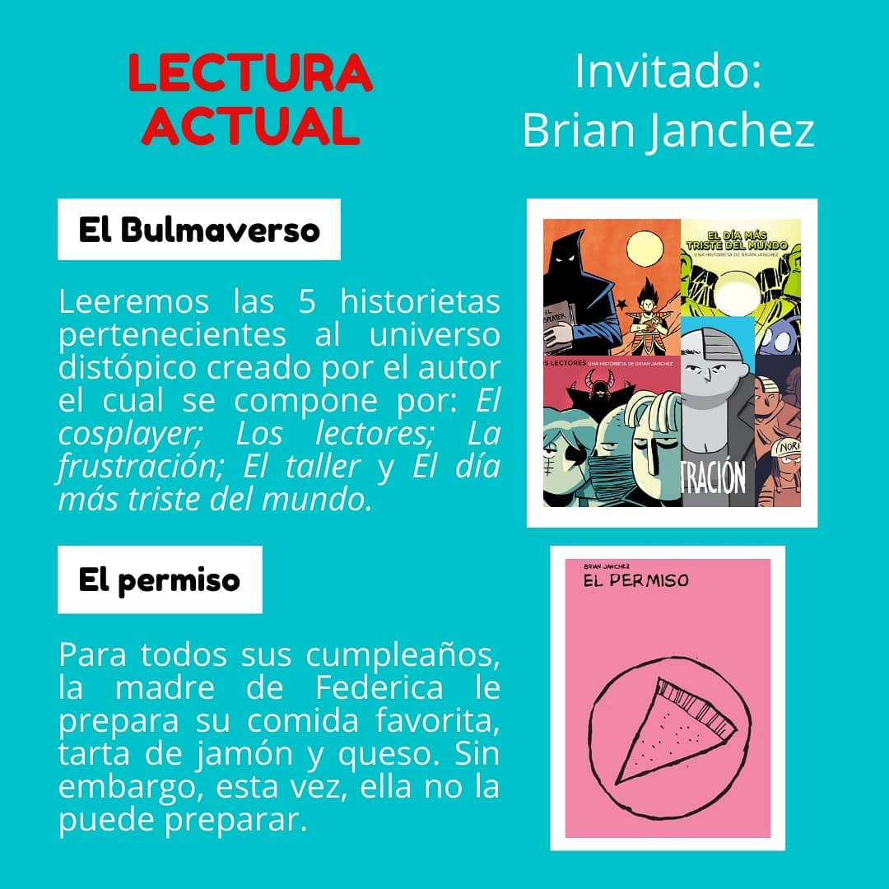
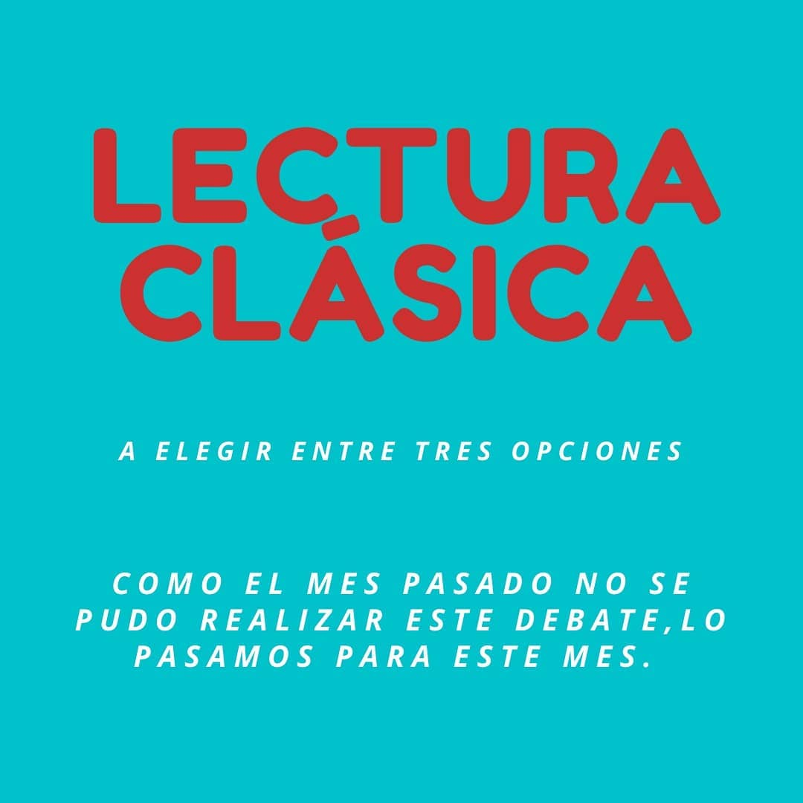
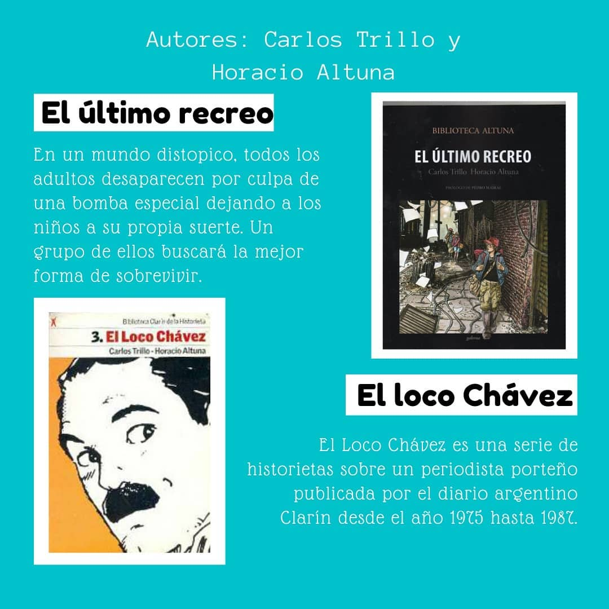
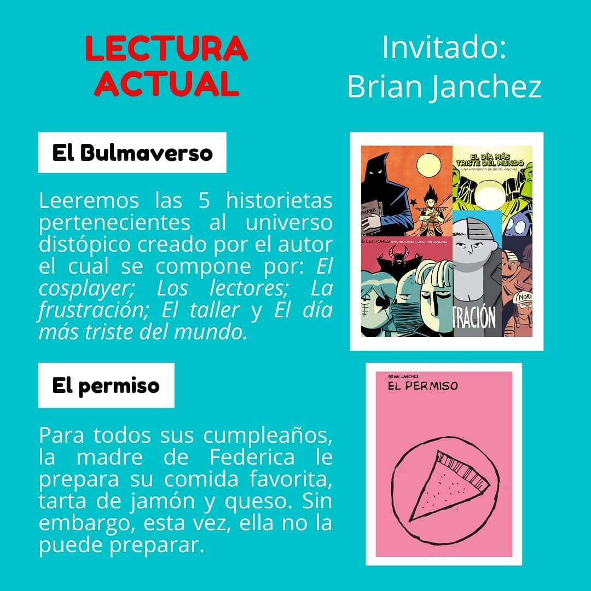
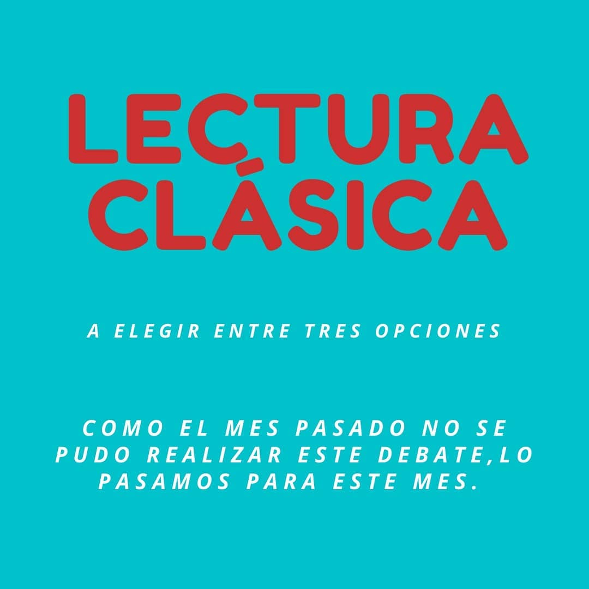
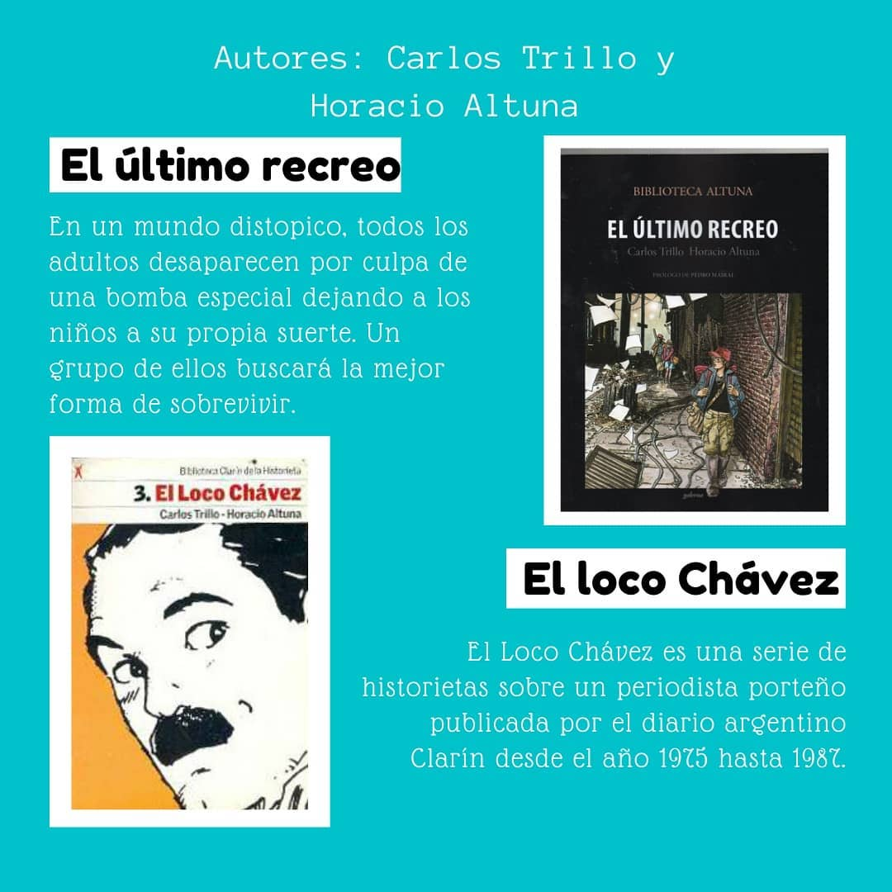

Historieta Cero es un espacio para leer en conjunto historieta argentina tanto contemporánea como clásica con el fin de difundir la obra de diferentes autorxs y editoriales, y así dar un pantallazo tanto a lectorxs nuevxs como experimentadxs.⠀⠀ ⠀⠀ Llegó marzo y eso significa una nueva lectura. Este mes nos visita Brian Janchez, autor integral de historietas con gran cantidad de publicaciones tanto en digital como en papel. Como lecturas para esta ocasión tenemos: “El Bulmaverso” (compuesto por 5 historietas: “El cosplayer”; “Los lectores”; “La frustración”; “El taller” y “El día más triste del mundo”) y “El permiso”. Todas estas obras se pueden leer gratis en su blog https://brianjanchez.blogspot.com/. El debate se hará junto al autor el último fin de semana del presente mes (fecha y horario a definir) por videollamada.⠀⠀ ⠀⠀ Por su parte, el mes de Marzo también tiene lectura clásica, la cual fue elegida entre lxs participantes del grupo. Como el mes pasado no se pudo realizar este debate, saldaremos la deuda que le tenemos a la gran dupla autoral de Carlos Trillo y Horacio Altuna. Para esta labor elegimos dos obras de renombre: El último recreo y El loco Chávez. Como siempre, tendremos la charla a mediados del mes por videollamada.⠀⠀ ⠀⠀ Lxs que quieran participar pasarán a formar parte de un grupo de whatsapp donde se subirá información relevante y, además, se podrán intercambiar opiniones, lecturas e inquietudes con las que podamos enriquecer nuestra experiencia leyendo historietas (con moderación de spoilers, obviamente). Hay tiempo para unirse hasta una semana antes de los debates.⠀⠀ ⠀⠀⠀ Requisitos:⠀ ⠀⠀⠀ - Ser mayor de edad.⠀⠀⠀ ⠀⠀⠀ - Residir en Argentina.⠀⠀⠀ ⠀⠀⠀ Si están interesadxs y/o conocen a alguien que le pueda llamar la atención les pido por favor que me lo hagan saber por mensaje directo. También, se agradece difusión.⠀⠀⠀ ⠀⠀⠀ Espero que esta propuesta les interese. ¡Saludos!